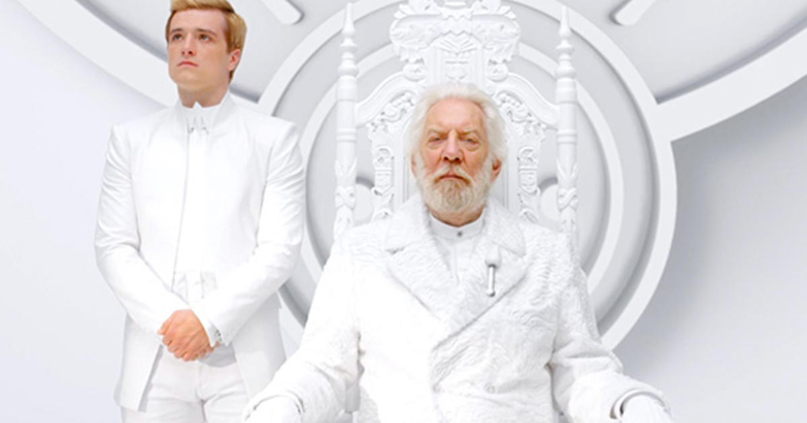

Suzanne Collins on filling Hunger Games gaps with prequel 'The Ballad of Songbirds and Snakes'.
After nearly a year of waiting, Hunger Games fans can finally get their hands on Suzanne Collins' highly-anticipated prequel novel, The Ballad of Songbirds and Snakes.
Set more than six decades before the start of the original trilogy, the book follows a young Coriolanus Snow (future demagogue of Panem) as he mentors a young Tribute from District 12 (birthplace of Katniss Everdeen, the person who brings about Snow's eventual downfall) in the run-up to the 10th Annual Hunger Games. As it turns out, the mysterious participant, Lucy Gray, has a stronger — almost cyclical — connection to Katniss than we previously thought.
"In the first chapter of The Hunger Games, I make reference to a fourth District 12 victor. Katniss doesn’t seem to know anything about the person worth mentioning," Collins said in an interview with Scholastic VP, David Levithan. "While her story isn’t well-known, Lucy Gray lives on in a significant way through her music, helping to bring down Snow in the trilogy. Imagine his reaction when Katniss starts singing 'Deep in the Meadow' to Rue in the arena. Beyond that, Lucy Gray’s legacy is that she introduced entertainment to the Hunger Games."
While the Games were rather rudimentary in the first decade of poverty and reconstruction after the first civil war, Collins assured Levithan that the 10th anniversary of the event "is where it all blows wide open, both figuratively and literally."

When it came to introducing readers to Snow's origin story so-to-speak, the author looked at the works of poet William Wordsworth and philosopher John Locke. In addition, the character's experience with "trauma, loss, and deprivation" sparked a question of nature versus nurture.
"I thought about Wordsworth's line, 'The Child is father of the Man.' The groundwork for the aging President Snow of the trilogy was laid in childhood," she explained. "Then there’s Locke, who’s all over this book, with his theory of tabula rasa, or blank slate, in which we’re all products of our experiences. Snow’s authoritarian convictions grew out of the experiences of his childhood, as did his complicated relationships with mockingjays, food, the Hunger Games, District 12, District 13, and women. So, you rewind and plant the seeds."